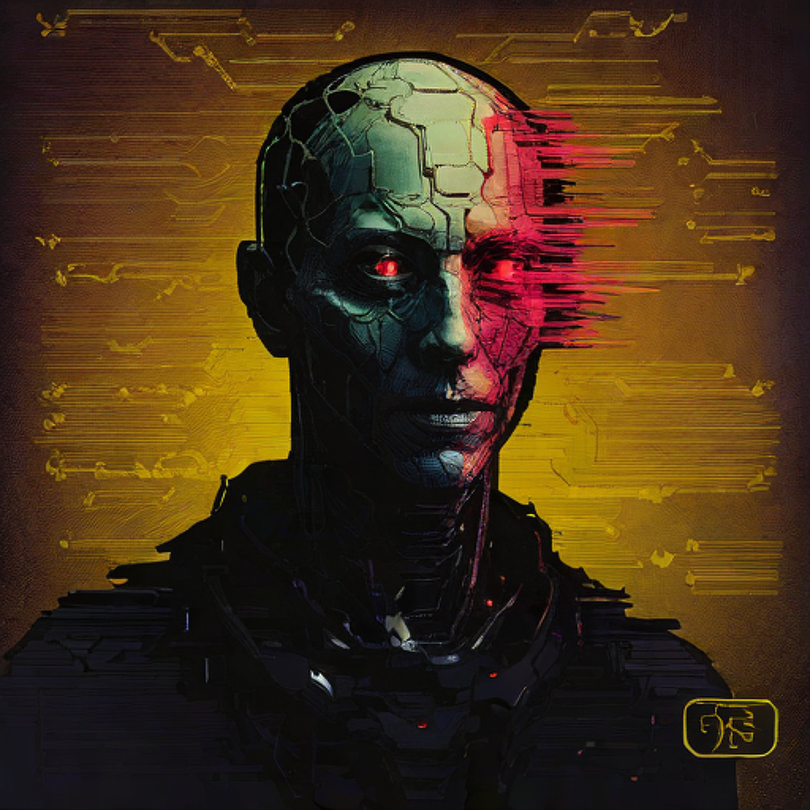

Genesis (100)
- Archive Origin
- Corruption Type
- Emotion Signature
- Visual Integrity
- Recovery Level
- Legacy Seal
The first layer of the archive: almost intact traces, minimal corruption, high‑contrast details. Ancestral symbols of the pre‑machine era.